Docker企业级私有仓库
1. Harbor简介¶
Harbor是一个用于存储和分发Docker镜像的企业级Registry服务器。 镜像的存储harbor使用的是官方的docker registry(v2命名是distribution)服务去完成。harbor在docker distribution的基础上增加了一些安全、访问控制、管理的功能以满足企业对于镜像仓库的需求。harbor以docker-compose的规范形式组织各个组件，并通过docker-compose工具进行启停。 docker的registry是用本地存储或者s3都是可以的，harbor的功能是在此之上提供用户权限管理、镜像复制等功能，提高使用的registry的效率。Harbor的镜像拷贝功能是通过docker registry的API去拷贝，这种做法屏蔽了繁琐的底层文件操作、不仅可以利用现有docker registry功能不必重复造轮子，而且可以解决冲突和一致性的问题。
1.1 Harbor架构¶
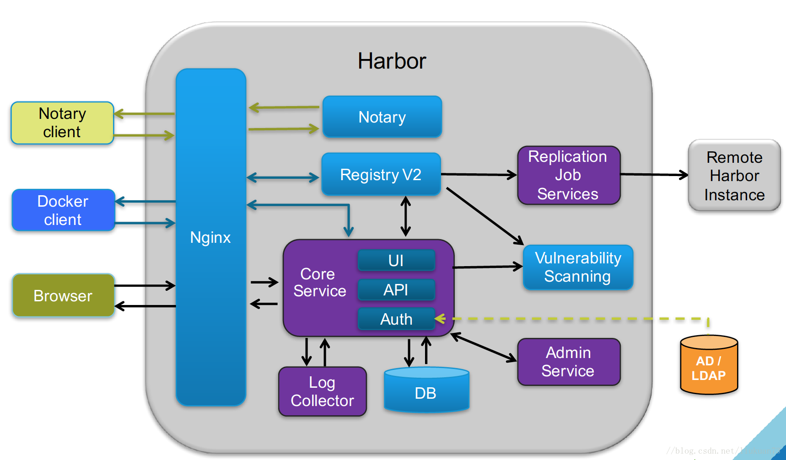
主要组件包括:
- Proxy：对应启动组件nginx。它是一个nginx反向代理，代理Notary client（镜像认证）、Docker client（镜像上传下载等）和浏览器的访问请求（Core Service）给后端的各服务；
- UI（Core Service）：对应启动组件harbor-ui。底层数据存储使用mysql数据库，主要提供了四个子功能：
- UI：一个web管理页面ui；
- API：Harbor暴露的API服务；
- Auth：用户认证服务，decode后的token中的用户信息在这里进行认证；auth后端可以接db、ldap、uaa三种认证实现；
- Token服务（上图中未体现）：负责根据用户在每个project中的role来为每一个docker push/pull命令issuing一个token，如果从docker client发送给registry的请求没有带token，registry会重定向请求到token服务创建token。
- Registry：对应启动组件registry。负责存储镜像文件，和处理镜像的pull/push命令。Harbor对镜像进行强制的访问控制，Registry会将客户端的每个pull、push请求转发到token服务来获取有效的token。
- Admin Service：对应启动组件harbor-adminserver。是系统的配置管理中心附带检查存储用量，ui和jobserver启动时候需要加载adminserver的配置；
- Job Sevice：对应启动组件harbor-jobservice。负责镜像复制工作的，他和registry通信，从一个registry pull镜像然后push到另一个registry，并记录job_log；
- Log Collector：对应启动组件harbor-log。日志汇总组件，通过docker的log-driver把日志汇总到一起；
- Volnerability Scanning：对应启动组件clair。负责镜像扫描
- Notary：对应启动组件notary。负责镜像认证
- DB：对应启动组件harbor-db，负责存储project、 user、 role、replication、image_scan、access等的metadata数据。
1.2 Docker Registery¶
- 1.Registry用于保存docker镜像，包括镜像的层次结构和元数据
- 2.用户可自建Registry，也可以使用官方的Docker Hub
Docker Registery 分类
- 1.Sponsor Registry 第三方Registry，供客户和Docker社区使用
- 2.Mirror Registry 第三方Registry，只让客户使用
- 3.Vendor Registry 由发布Docker镜像的供应商提供的Registry
- 4.Private Registry 通过设有防火墙和额外的安全层的私有实体提供的Registry
2. 系统部署基础¶
服务器的ip规划
| 机器 | IP | 系统 |
|---|---|---|
| Docker Registry | 192.168.183.134 | Centos 7 |
| Docker Client | 192.168.183.133 | Centos 7 推送镜像 |
| Docker Client | 192.168.183.135 | Centos 7 拉取镜像 |
名词解释
| No | 名词 | 解释 |
|---|---|---|
| 1 | Docker Registry | Docker私有仓库（本地） |
| 2 | Docker Client | 上传和下载的docker客户端 |
3. Docker自带仓库¶
3.1 安装官方自带仓库¶
3.1.1 安装¶
[root@leco ~]# yum install docker-registry [root@leco ~]# yum info docker-registry Loaded plugins: fastestmirror Loading mirror speeds from cached hostfile * base: mirrors.aliyun.com * epel: mirrors.aliyun.com * extras: mirrors.aliyun.com * updates: mirrors.aliyun.com Available Packages Name : docker-registry Arch : x86_64 Version : 0.9.1 Release : 7.el7 Size : 123 k Repo : extras/7/x86_64 Summary : Registry server for Docker URL : https://github.com/docker/docker-registry License : ASL 2.0 Description : Registry server for Docker (hosting/delivering of repositories and images).
3.1.2 查看安装信息¶
[root@leco ~]# rpm -ql docker-distribution /etc/docker-distribution/registry/config.yml /usr/bin/registry /usr/lib/systemd/system/docker-distribution.service /usr/share/doc/docker-distribution-2.6.2 /usr/share/doc/docker-distribution-2.6.2/AUTHORS /usr/share/doc/docker-distribution-2.6.2/CONTRIBUTING.md /usr/share/doc/docker-distribution-2.6.2/LICENSE /usr/share/doc/docker-distribution-2.6.2/MAINTAINERS /usr/share/doc/docker-distribution-2.6.2/README.md /var/lib/registry [root@leco registry]# pwd /etc/docker-distribution/registry [root@leco registry]# cat config.yml version: 0.1 log: fields: service: registry storage: cache: layerinfo: inmemory filesystem: rootdirectory: /var/lib/registry # 仓库的存储路径，可以根据实际情况修改（找大点的空间配置） http: # 仓库协议 addr: :5000 # 仓库端口
3.1.3 启动仓库¶
[root@leco registry]# systemctl start docker-distribution.service
3.1.4 开机自启动¶
[root@leco registry]# systemctl enable docker-distribution.service Created symlink from /etc/systemd/system/multi-user.target.wants/docker-distribution.service to /usr/lib/systemd/system/docker-distribution.service.
3.1.5 查看服务¶
[root@leco registry]# ss -tnl State Recv-Q Send-Q Local Address:Port Peer Address:Port LISTEN 0 100 127.0.0.1:25 *:* LISTEN 0 128 *:22 *:* LISTEN 0 100 ::1:25 :::* LISTEN 0 128 :::5000 :::* LISTEN 0 128 :::22 :::*
3.2 Docker客户端操作¶
找一个新的docker客户端测试推拉
3.2.1 打tag¶
现在客户端标签docker私有仓库地址。不打标签默认推送到docker github上
[root@localhost img4]# docker tag myweb:v0.3-11 192.168.183.134:5000/myweb:v0.3-11
3.2.2 查看tag信息¶
[root@localhost img4]# docker images |grep 5000
192.168.183.134:5000/myweb v0.3-11 44ef73a3a19b 39 minutes ago 18MB
[root@localhost img4]# docker push 192.168.183.134:5000/myweb:v0.3-11
The push refers to repository [192.168.183.134:5000/myweb]
Get https://192.168.183.134:5000/v2/: http: server gave HTTP response to HTTPS client
此时要在客户端改变配置，变成http协议（docker 仓库默认是https协议，使用http协议）
[root@localhost img4]# cat !$
cat /etc/docker/daemon.json
{
"registry-mirrors": ["http://3e930982.m.daocloud.io"],
"insecure-registries":["192.168.183.134:5000"]
}
其中insecure-registries后面是docker仓库的地址和端口。
[root@localhost img4]# systemctl restart docker
3.2.3 push¶
修改协议后重启docker然后在push镜像到私有仓库里面
[root@localhost img4]# docker push 192.168.183.134:5000/myweb:v0.3-11 The push refers to repository [192.168.183.134:5000/myweb] 347a19806329: Pushed 20555723c54b: Pushed a79fe6dff072: Pushed 87deea508850: Pushed 90c4db1d5ef5: Pushed cd7100a72410: Pushed v0.3-11: digest: sha256:be593f8f6e45181416242b37183b3c5429745e3623424a1a9b672afab898714e size: 1568
3.2.4 仓库查看¶
docker私有仓库端查看
[root@leco registry]# ls /var/lib/registry/docker/registry/v2/repositories/myweb/_layers/sha256/ 44ef73a3a19b95ae6f7e0c4bf92f0fcc876dce929340455c591430203b4bc151 4b15fa862ac67691a8bc682937be38197ebebe580f01b1bcc0ee823fc43709aa 5e38f0c1e3e667d4fd01ac85ebcd4337579471d841a925d4be81bde53a482614 7d4e05a01906143afc15671a53151ea9755dac230db376a8b8364b21ca774dbc 8aeac9a3205fce5e21ab65ccce330fe389a9aaf47e4b682970b1772ae25a1d73 b430473be128c1302a75e8381dfbaa45182fec81db4f75b749e4896d7816c2ea ff3a5c916c92643ff77519ffa742d3ec61b7f591b6b7504599d95a4a41134e28 可见从docker客户端push上的镜像已经推送过来，经过hash了。
3.2.5 pull¶
在其他机器上测试（pull镜像）
[root@leco registry]# cat /etc/docker/daemon.json
{
"registry-mirrors": ["http://3e930982.m.daocloud.io"],
"bip": "10.0.0.1/16",
"insecure-registries":["192.168.183.134:5000"]
}
[root@leco registry]# systemctl restart docker
[root@leco registry]# docker pull 192.168.183.134:5000/myweb:v0.3-11
v0.3-11: Pulling from myweb
ff3a5c916c92: Pull complete
b430473be128: Pull complete
7d4e05a01906: Pull complete
8aeac9a3205f: Pull complete
5e38f0c1e3e6: Pull complete
4b15fa862ac6: Pull complete
Digest: sha256:be593f8f6e45181416242b37183b3c5429745e3623424a1a9b672afab898714e
Status: Downloaded newer image for 192.168.183.134:5000/myweb:v0.3-11
[root@leco registry]# docker images
REPOSITORY TAG IMAGE ID CREATED SIZE
192.168.183.134:5000/myweb v0.3-11 44ef73a3a19b About an hour ago 18MB
4. Harbor¶
4.1 参考文档¶
4.2 下载安装¶
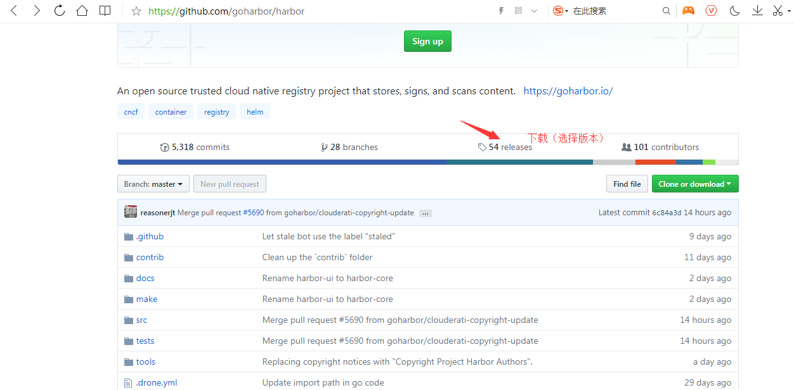
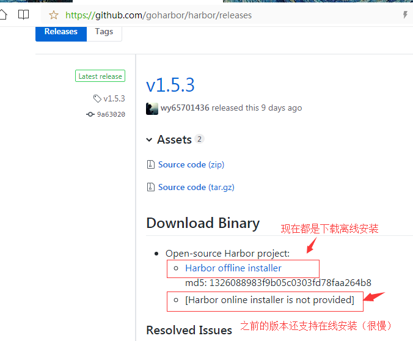
下载安装后上传到服务器上，解压配置安装。
4.2.1 关闭仓库¶
关闭之前自带（github自己的）的镜像仓库
[root@leco ~]# netstat -lnp|grep 5000 tcp6 0 0 :::5000 :::* LISTEN 17540/registry [root@leco ~]# systemctl stop docker-distribution [root@leco ~]# netstat -lnp|grep 500 [root@leco opt]# ls harbor-offline-installer-v1.5.3.tgz myimages.gz [root@leco opt]# tar xf harbor-offline-installer-v1.5.3.tgz -C /usr/local/ [root@leco opt]# cd /usr/local/harbor/ [root@leco harbor]# pwd /usr/local/harbor [root@leco harbor]# ll total 895716 drwxr-xr-x 4 root root 37 Sep 20 17:37 common -rw-r--r-- 1 root root 1185 Sep 12 14:19 docker-compose.clair.yml -rw-r--r-- 1 root root 1725 Sep 12 14:19 docker-compose.notary.yml -rw-r--r-- 1 root root 3596 Sep 12 14:19 docker-compose.yml drwxr-xr-x 3 root root 156 Sep 12 14:19 ha -rw-r--r-- 1 root root 6955 Sep 20 17:32 harbor.cfg -rw-r--r-- 1 root root 6956 Sep 20 17:31 harbor.cfg.ori -rw-r--r-- 1 root root 915878468 Sep 12 14:21 harbor.v1.5.3.tar.gz -rwxr-xr-x 1 root root 5773 Sep 12 14:19 install.sh -rw-r--r-- 1 root root 10764 Sep 12 14:19 LICENSE -rw-r--r-- 1 root root 482 Sep 12 14:19 NOTICE -rw-r--r-- 1 root root 1247461 Sep 12 14:19 open_source_license -rwxr-xr-x 1 root root 27840 Sep 12 14:19 prepare [root@leco harbor]# cp harbor.cfg harbor.cfg.ori
4.2.2 修改配置文件¶
[root@leco harbor]# diff harbor.cfg harbor.cfg.ori 7c7 < hostname = 192.168.183.134 --- > hostname = reg.mydomain.com 修改hostname，hostname是对外访问的的地址，可以域名可以ip地址，这使用ip（也就是docker的私有仓库地址）
4.2.3 开始安装¶
[root@leco harbor]# sh install.sh [Step 0]: checking installation environment ... Note: docker version: 18.06.1 ✖ Need to install docker-compose(1.7.1+) by yourself first and run this script again.
4.2.4 安装编排工具¶
先要安装docker-compose 因为harbor使用通过docker-compose编排工具去安装
[root@leco harbor]# yum install -y docker-compose [root@leco harbor]# sh install.sh [Step 0]: checking installation environment ... Note: docker version: 18.06.1 Note: docker-compose version: 1.18.0 [Step 1]: loading Harbor images ... dba693fc2701: Loading layer [==================================================>] 133.4MB/133.4MB 5773887c4c41: Loading layer [==================================================>] 30.09MB/30.09MB 6fc2abbcae42: Loading layer [==================================================>] 15.37MB/15.37MB d85f176a11ec: Loading layer [==================================================>] 15.37MB/15.37MB Loaded image: vmware/harbor-adminserver:v1.5.3 462b14c85230: Loading layer [==================================================>] 410.1MB/410.1MB c2e0c8cb2903: Loading layer [==================================================>] 9.216kB/9.216kB 11bdb24cded2: Loading layer [==================================================>] 9.216kB/9.216kB 5d8f974b49ef: Loading layer [==================================================>] 7.68kB/7.68kB ee04f13f4147: Loading layer [==================================================>] 1.536kB/1.536kB 799db4dfe41a: Loading layer [==================================================>] 11.78kB/11.78kB f7d813585bdd: Loading layer [==================================================>] 2.56kB/2.56kB 6300bbdbd7ab: Loading layer [==================================================>] 3.072kB/3.072kB Loaded image: vmware/harbor-db:v1.5.3 1d7516778a05: Loading layer [==================================================>] 30.09MB/30.09MB f7ec8d1b47d0: Loading layer [==================================================>] 20.91MB/20.91MB 22b0ad749c21: Loading layer [==================================================>] 20.91MB/20.91MB Loaded image: vmware/harbor-jobservice:v1.5.3 2d449d67c05a: Loading layer [==================================================>] 89.58MB/89.58MB 0bfd4e706575: Loading layer [==================================================>] 3.072kB/3.072kB 6100e173c230: Loading layer [==================================================>] 59.9kB/59.9kB 86fe093d1358: Loading layer [==================================================>] 61.95kB/61.95kB Loaded image: vmware/redis-photon:v1.5.3 Loaded image: photon:1.0 3bf3086a6569: Loading layer [==================================================>] 30.09MB/30.09MB 641d0f77d675: Loading layer [==================================================>] 10.95MB/10.95MB 89efbaabea87: Loading layer [==================================================>] 17.3MB/17.3MB 1276e51f4dc2: Loading layer [==================================================>] 15.87kB/15.87kB 49e187d04e78: Loading layer [==================================================>] 3.072kB/3.072kB e62fbfea411d: Loading layer [==================================================>] 28.24MB/28.24MB Loaded image: vmware/notary-signer-photon:v0.5.1-v1.5.3 Loaded image: vmware/mariadb-photon:v1.5.3 201f6ade61d8: Loading layer [==================================================>] 102.5MB/102.5MB 81221fbb5879: Loading layer [==================================================>] 6.656kB/6.656kB 2268e3c9e521: Loading layer [==================================================>] 2.048kB/2.048kB 9fca06f4b193: Loading layer [==================================================>] 7.68kB/7.68kB Loaded image: vmware/postgresql-photon:v1.5.3 11d6e8a232c9: Loading layer [==================================================>] 30.09MB/30.09MB 42650b04d53d: Loading layer [==================================================>] 24.41MB/24.41MB a1cd8af19e29: Loading layer [==================================================>] 7.168kB/7.168kB 4b1cda90ba19: Loading layer [==================================================>] 10.56MB/10.56MB 1351f0f3006a: Loading layer [==================================================>] 24.4MB/24.4MB Loaded image: vmware/harbor-ui:v1.5.3 e335f4c3af7d: Loading layer [==================================================>] 79.93MB/79.93MB 2aea487bc2c4: Loading layer [==================================================>] 3.584kB/3.584kB d2efec3de68b: Loading layer [==================================================>] 3.072kB/3.072kB d0d71a5ce1dd: Loading layer [==================================================>] 4.096kB/4.096kB 19930367abf0: Loading layer [==================================================>] 3.584kB/3.584kB 03e5b7640db5: Loading layer [==================================================>] 9.728kB/9.728kB Loaded image: vmware/harbor-log:v1.5.3 5aebe8cc938c: Loading layer [==================================================>] 11.97MB/11.97MB Loaded image: vmware/nginx-photon:v1.5.3 ede6a57cbd7e: Loading layer [==================================================>] 30.09MB/30.09MB 4d6dd4fc1d87: Loading layer [==================================================>] 2.56kB/2.56kB c86a69f49f60: Loading layer [==================================================>] 2.56kB/2.56kB 0cf6e04c5927: Loading layer [==================================================>] 2.048kB/2.048kB 6fbff4fe9739: Loading layer [==================================================>] 22.8MB/22.8MB 6f527a618092: Loading layer [==================================================>] 22.8MB/22.8MB Loaded image: vmware/registry-photon:v2.6.2-v1.5.3 e29a8834501b: Loading layer [==================================================>] 12.16MB/12.16MB aaf67f1da2c7: Loading layer [==================================================>] 17.3MB/17.3MB 8d5718232133: Loading layer [==================================================>] 15.87kB/15.87kB fc89aca1dd12: Loading layer [==================================================>] 3.072kB/3.072kB 076eb5a76f6d: Loading layer [==================================================>] 29.46MB/29.46MB Loaded image: vmware/notary-server-photon:v0.5.1-v1.5.3 454c81edbd3b: Loading layer [==================================================>] 135.2MB/135.2MB e99db1275091: Loading layer [==================================================>] 395.4MB/395.4MB 051e4ee23882: Loading layer [==================================================>] 9.216kB/9.216kB 6cca4437b6f6: Loading layer [==================================================>] 9.216kB/9.216kB 1d48fc08c8bc: Loading layer [==================================================>] 7.68kB/7.68kB 0419724fd942: Loading layer [==================================================>] 1.536kB/1.536kB 543c0c1ee18d: Loading layer [==================================================>] 655.2MB/655.2MB 4190aa7e89b8: Loading layer [==================================================>] 103.9kB/103.9kB Loaded image: vmware/harbor-migrator:v1.5.0 45878c64fc3c: Loading layer [==================================================>] 165.3MB/165.3MB fc3d407ce98f: Loading layer [==================================================>] 10.93MB/10.93MB d7a0785bb902: Loading layer [==================================================>] 2.048kB/2.048kB a17e0f23bc84: Loading layer [==================================================>] 48.13kB/48.13kB 57c7181f2336: Loading layer [==================================================>] 10.97MB/10.97MB Loaded image: vmware/clair-photon:v2.0.5-v1.5.3 [Step 2]: preparing environment ... Generated and saved secret to file: /data/secretkey Generated configuration file: ./common/config/nginx/nginx.conf Generated configuration file: ./common/config/adminserver/env Generated configuration file: ./common/config/ui/env Generated configuration file: ./common/config/registry/config.yml Generated configuration file: ./common/config/db/env Generated configuration file: ./common/config/jobservice/env Generated configuration file: ./common/config/jobservice/config.yml Generated configuration file: ./common/config/log/logrotate.conf Generated configuration file: ./common/config/jobservice/config.yml Generated configuration file: ./common/config/ui/app.conf Generated certificate, key file: ./common/config/ui/private_key.pem, cert file: ./common/config/registry/root.crt The configuration files are ready, please use docker-compose to start the service. Creating harbor-log ... done [Step 3]: checking existing instance of Harbor ... Creating registry ... done Creating harbor-ui ... done Creating network "harbor_harbor" with the default driver Creating nginx ... done Creating harbor-db ... Creating registry ... Creating harbor-adminserver ... Creating redis ... Creating harbor-ui ... Creating harbor-jobservice ... Creating nginx ... ✔ ----Harbor has been installed and started successfully.---- Now you should be able to visit the admin portal at http://192.168.183.134. For more details, please visit https://github.com/vmware/harbor .
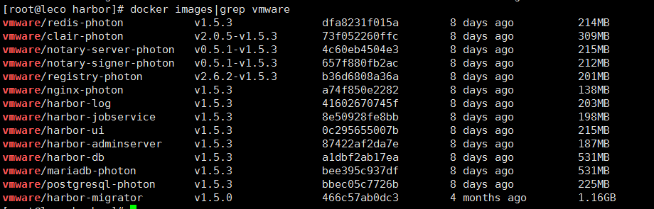
Harbor其实也是加载docker镜像
4.3 Web操作¶
4.3.1 简单介绍¶
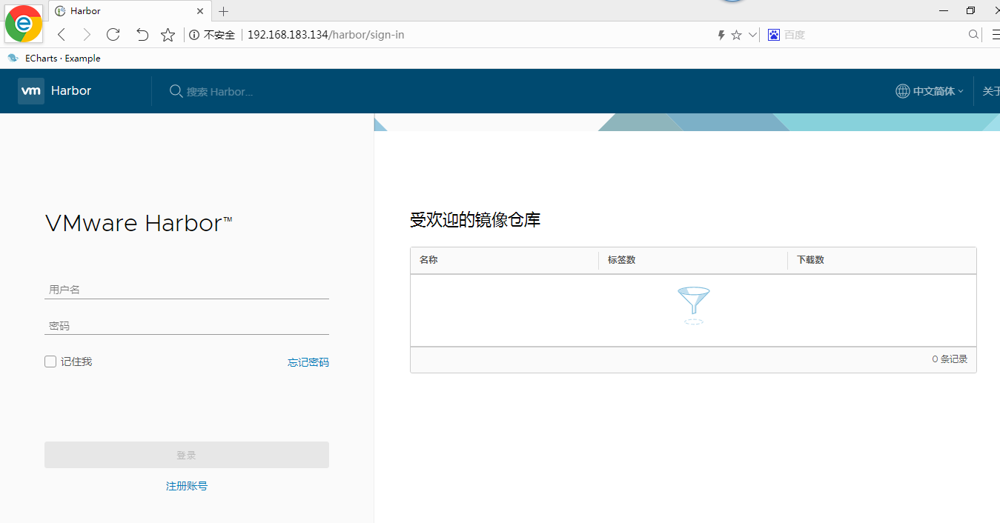
默认账号和密码在配置文件中，
- 账号是: admin
- 密码是: Harbor12345
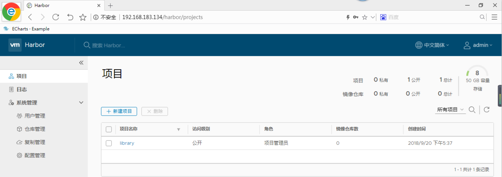
4.3.2 新建用户¶
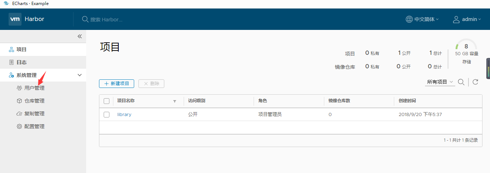
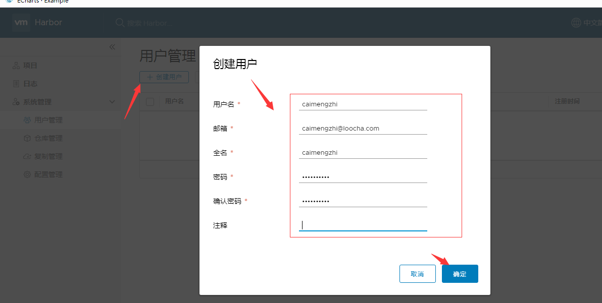
因为harbor是多人的私有仓库，所以建立普通用户，对应建立私有的仓库，然后docker客户端通过使用这个新建的账号和密码登录harbor然后推送到自己的仓库中。 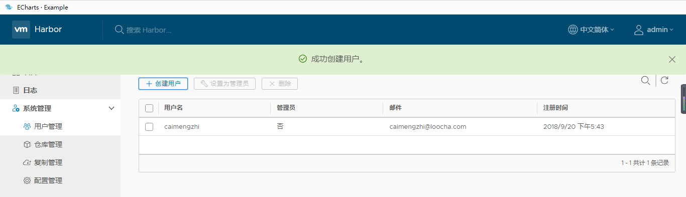
4.3.3 新建私有仓库¶
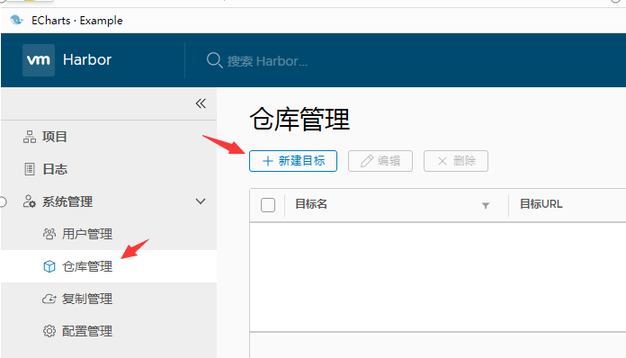
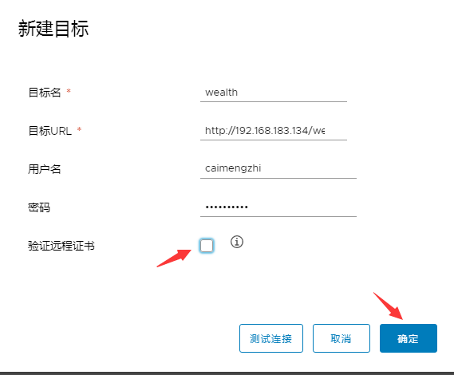
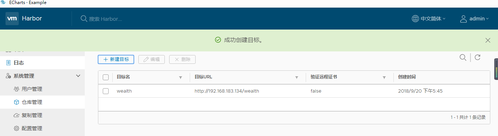
4.3.4 普通用户登录¶
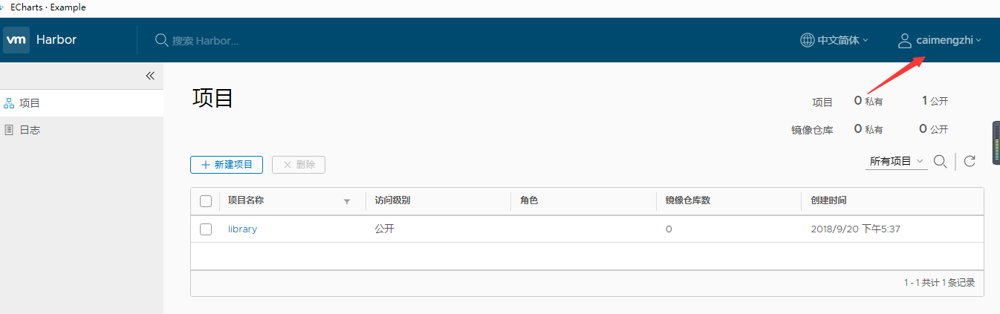
4.3.5 普通用户新建项目¶
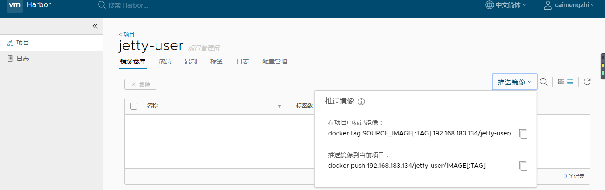
4.4 客户端操作推送¶
4.4.1 pull镜像¶
[root@localhost img4]# ifconfig ens33
ens33: flags=4163<UP,BROADCAST,RUNNING,MULTICAST> mtu 1500
inet 192.168.183.133 netmask 255.255.255.0 broadcast 192.168.183.255
ether 00:0c:29:9e:1f:67 txqueuelen 1000 (Ethernet)
RX packets 66573 bytes 17079495 (16.2 MiB)
RX errors 0 dropped 0 overruns 0 frame 0
TX packets 36722 bytes 16771887 (15.9 MiB)
TX errors 0 dropped 0 overruns 0 carrier 0 collisions 0
[root@localhost img4]# cat /etc/docker/daemon.json
{
"registry-mirrors": ["http://3e930982.m.daocloud.io"],
"insecure-registries":["192.168.183.134"]
}
[root@localhost img4]# systemctl restart docker
4.4.2 客户端打tag¶
打tag的目的主要是推送的镜像到私有仓库而不是推送到dockerhub上（默认都是推送到dockerhub上）
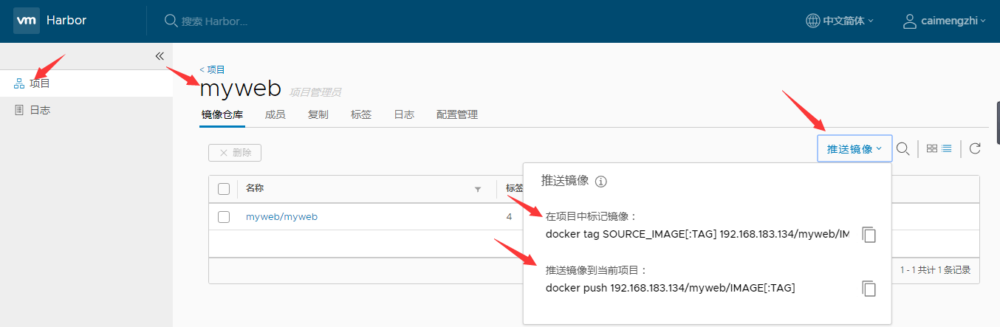
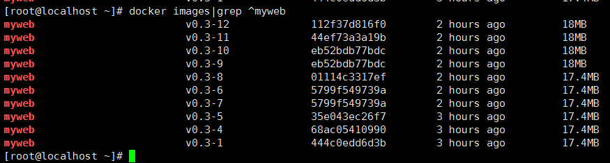
[root@localhost img4]# docker tag myweb:v0.3-4 192.168.183.134/myweb/myweb:v0.3-4 [root@localhost img4]# docker tag myweb:v0.3-5 192.168.183.134/myweb/myweb:v0.3-5 [root@localhost img4]# docker tag myweb:v0.3-6 192.168.183.134/myweb/myweb:v0.3-6 [root@localhost img4]# docker tag myweb:v0.3-7 192.168.183.134/myweb/myweb:v0.3-7
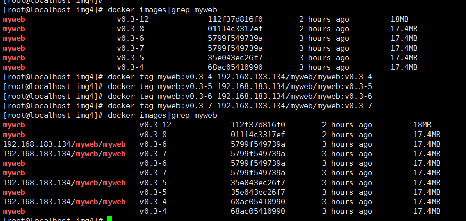
4.4.3 登录¶
[root@localhost img4]# docker login 192.168.183.134 Username: taotaolinux #账号是web登录的账号和密码 Password: WARNING! Your password will be stored unencrypted in /root/.docker/config.json. Configure a credential helper to remove this warning. See https://docs.docker.com/engine/reference/commandline/login/#credentials-store Login Succeeded
4.4.4 推送镜像¶
[root@localhost img4]# docker push 192.168.183.134/myweb/myweb <若是推送不指定镜像tag，会推送所有192.168.183.134/myweb/myweb的镜像> The push refers to repository [192.168.183.134/myweb/myweb] a8dcd6aa3279: Pushed 9a07ffbe3d7d: Pushed 955e7d7f7300: Pushed 95bb4e754f2d: Pushed ebf12965380b: Pushed v0.3-4: digest: sha256:bff4611d26ab5ea7df2a2038f5c806060343e8dcb72f4e7d9c8186f9f29ab1d2 size: 1360 02d539f1584f: Pushed 9a07ffbe3d7d: Layer already exists 955e7d7f7300: Layer already exists 95bb4e754f2d: Layer already exists ebf12965380b: Layer already exists v0.3-5: digest: sha256:d989d072b34649c6c3db1b90cc8e9da01fc0851db7154087f8c20d9276c6b19e size: 1360 cf1c42bcc62e: Pushed 31d53a6ec2f6: Pushed 9a07ffbe3d7d: Layer already exists 955e7d7f7300: Layer already exists 95bb4e754f2d: Layer already exists ebf12965380b: Layer already exists v0.3-6: digest: sha256:f001406ad67619ca5a20595f5392099f4c89aabc03a577a9e2b21951daa6625b size: 1567 cf1c42bcc62e: Layer already exists 31d53a6ec2f6: Layer already exists 9a07ffbe3d7d: Layer already exists 955e7d7f7300: Layer already exists 95bb4e754f2d: Layer already exists ebf12965380b: Layer already exists v0.3-7: digest: sha256:f001406ad67619ca5a20595f5392099f4c89aabc03a577a9e2b21951daa6625b size: 1567
4.4.5 查看推送情况¶
推送完毕后在docker私有仓库上web查看之前推送的情况。
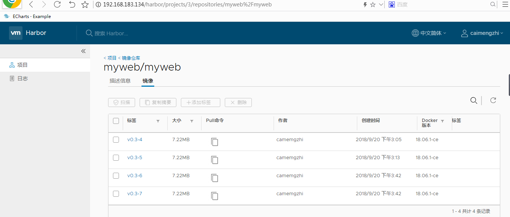
4.5 客户端操作拉¶
新找一个别的机器去拉去操作
4.5.1 修改配置文件¶
修改配置文件（http）
[root@leco ~]# cat /etc/docker/daemon.json
{
"registry-mirrors": ["http://3e930982.m.daocloud.io"],
"insecure-registries":["192.168.183.134"]
}
4.5.2 重启docker¶
[root@leco ~]# systemctl restart docker [root@leco ~]# ifconfig ens33 ens33: flags=4163<UP,BROADCAST,RUNNING,MULTICAST> mtu 1500 inet 192.168.183.135 netmask 255.255.255.0 broadcast 192.168.183.255 ether 00:0c:29:5e:f3:38 txqueuelen 1000 (Ethernet) RX packets 32850 bytes 2734678 (2.6 MiB) RX errors 0 dropped 0 overruns 0 frame 0 TX packets 3833 bytes 375551 (366.7 KiB) TX errors 0 dropped 0 overruns 0 carrier 0 collisions 0
4.5.3 登录¶
[root@leco ~]# docker login 192.168.183.134 Username: taotaolinux Password: WARNING! Your password will be stored unencrypted in /root/.docker/config.json. Configure a credential helper to remove this warning. See https://docs.docker.com/engine/reference/commandline/login/#credentials-store Login Succeeded
4.5.4 地址¶
登录web界面找到pull的地址
[root@leco ~]# docker pull 192.168.183.134/myweb/myweb:v0.3-7 v0.3-7: Pulling from myweb/myweb c67f3896b22c: Pull complete 428de5b8d58a: Pull complete 7efd417f3e28: Pull complete 61a56b170416: Pull complete e7206a413d4c: Pull complete 54a1363d75f0: Pull complete Digest: sha256:f001406ad67619ca5a20595f5392099f4c89aabc03a577a9e2b21951daa6625b Status: Downloaded newer image for 192.168.183.134/myweb/myweb:v0.3-7
4.5.5 查看本地镜像¶
[root@leco ~]# docker images REPOSITORY TAG IMAGE ID CREATED SIZE 192.168.183.134/myweb/myweb v0.3-7 5799f549739a 3 hours ago 17.4MB
4.6 Harbor 服务操作¶
4.6.1 暂停¶
[root@leco ~]# docker-compose pause
4.6.2 停止¶
[root@leco ~]# docker-compose stop
4.6.3 启动¶
[root@leco ~]# docker-compose start
[root@leco harbor]# pwd /usr/local/harbor [root@leco harbor]# ll total 895716 drwxr-xr-x 4 root root 37 Sep 20 17:37 common -rw-r--r-- 1 root root 1185 Sep 12 14:19 docker-compose.clair.yml -rw-r--r-- 1 root root 1725 Sep 12 14:19 docker-compose.notary.yml -rw-r--r-- 1 root root 3596 Sep 12 14:19 docker-compose.yml drwxr-xr-x 3 root root 156 Sep 12 14:19 ha -rw-r--r-- 1 root root 6955 Sep 20 17:32 harbor.cfg -rw-r--r-- 1 root root 6956 Sep 20 17:31 harbor.cfg.ori -rw-r--r-- 1 root root 915878468 Sep 12 14:21 harbor.v1.5.3.tar.gz -rwxr-xr-x 1 root root 5773 Sep 12 14:19 install.sh -rw-r--r-- 1 root root 10764 Sep 12 14:19 LICENSE -rw-r--r-- 1 root root 482 Sep 12 14:19 NOTICE -rw-r--r-- 1 root root 1247461 Sep 12 14:19 open_source_license -rwxr-xr-x 1 root root 27840 Sep 12 14:19 prepare 以上操作都要在这个目录下，执行的时候会自动加载docker-compose.yml文件
4.7 Harbor 邮件¶
4.7.1 邮件配置¶
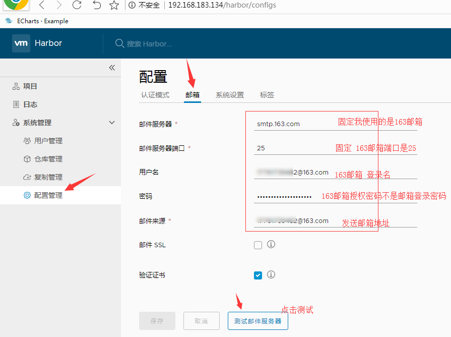
我使用的163的邮箱请按照上述参数找到自己的配置信息，其他邮箱请百度自行配置。
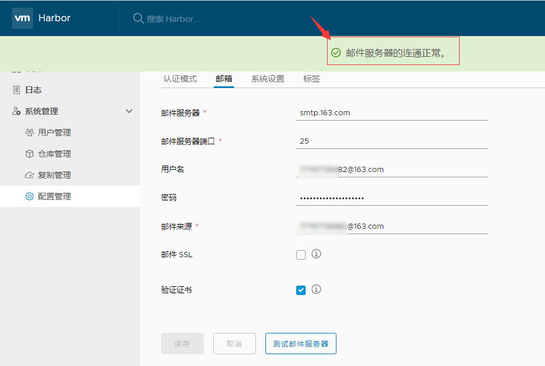 配置完后。检验
4.7.2 忘记登录密码¶
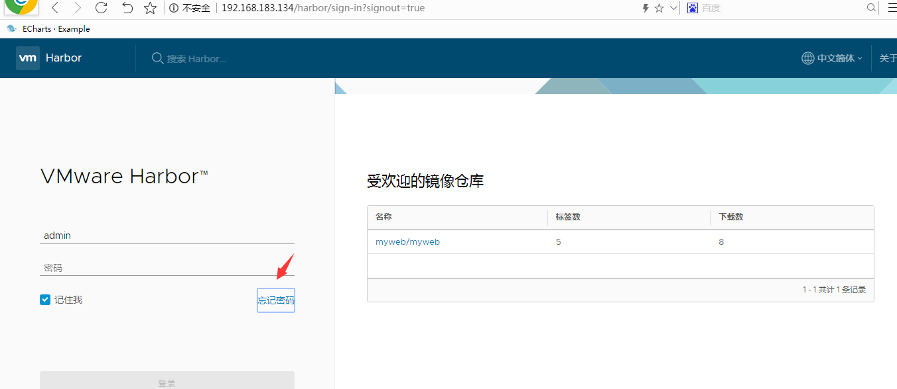
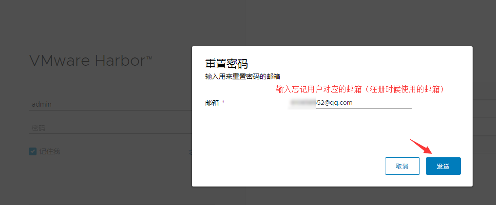
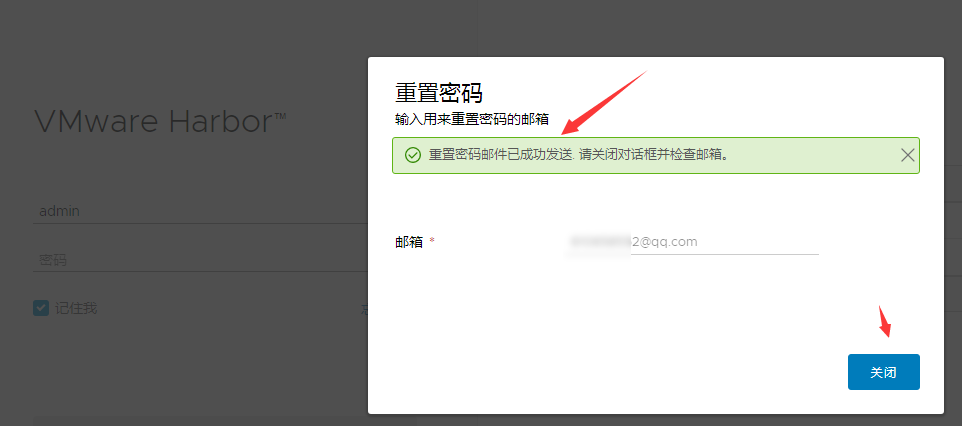
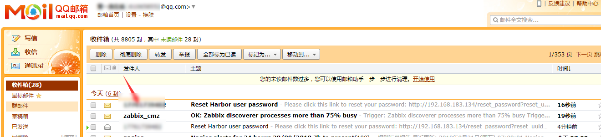
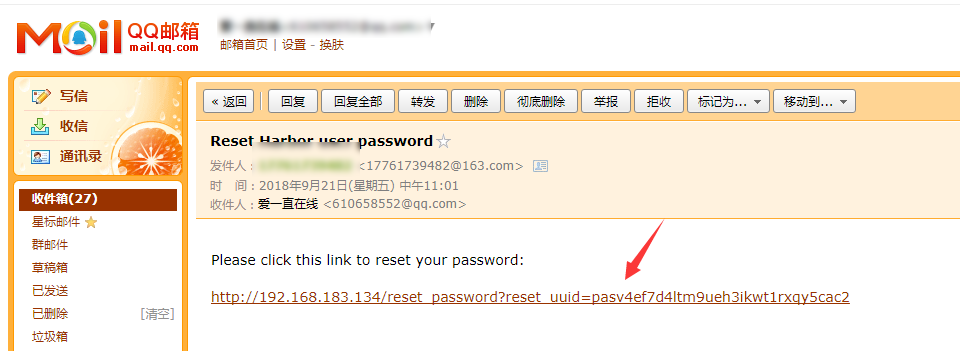
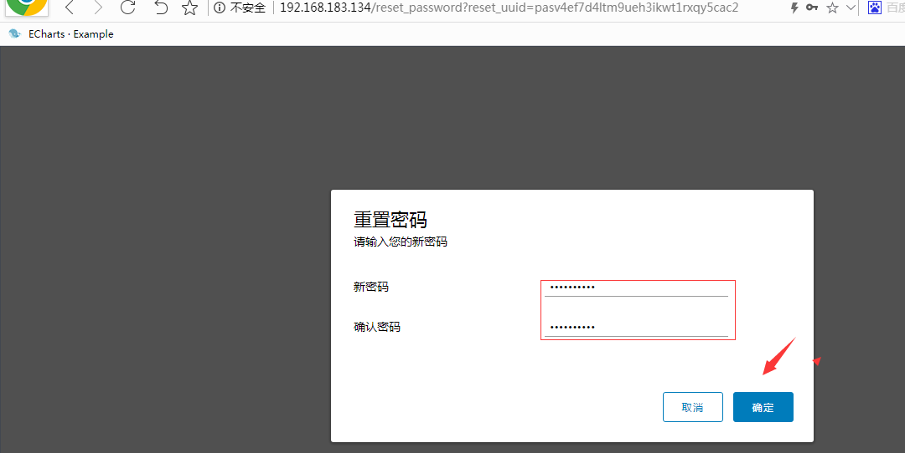
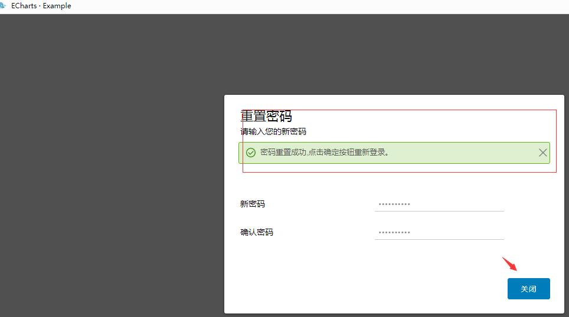 然后重新登录
4.8 QA¶
Q：Master-Slave的镜像架构中,如果Slave Registy中的镜像被删除了，会不会再次自动从Master Reg里面自动同步？
A：如果停止后再重新启动复制策略，可以同步被删除的镜像。
Q：对于多个投产地，多个仓库，哪种方式的高可用方案好么？第一种，共享存储存储可能会出现单点故障么？
A：共享存储只适合同一数据中心，多个产地延时太大，不适合共享存储。
Q：Registry之间同步是如何实现的？
A：Registry API。
Q：在存储这块考虑过提供插件方式可以调用外部模块，比如以插件方式支持s3这种对象存储？
A：Harbor支持其他存储方式，参见Harbor文档。